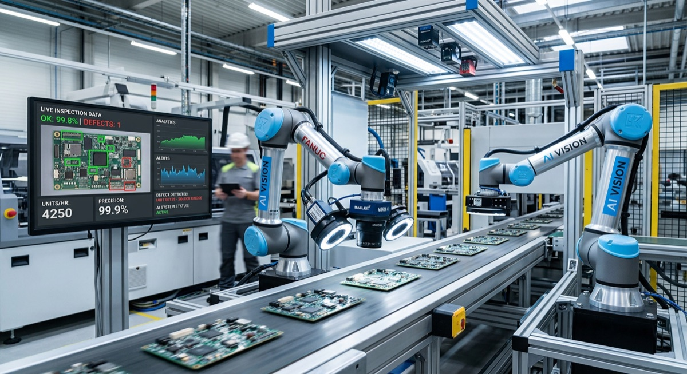
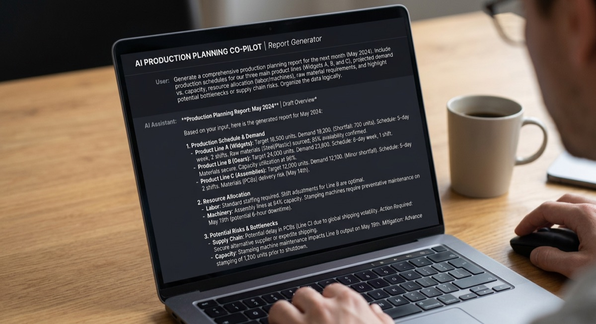
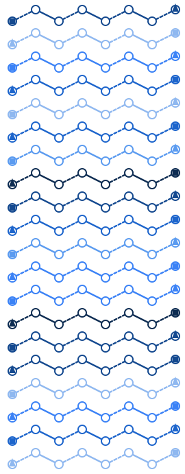
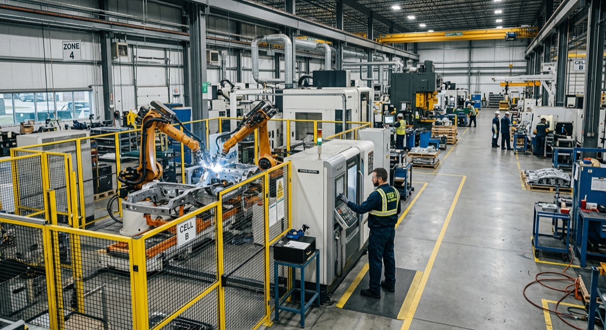

Production SystemsVision, maintenance & monitoring
Run AI on your line.
Inspection, predictive maintenance and monitoring, integrated with your PLCs, SCADA and MES/ERP.
Explore Production SystemsProduction-grade AI for inspection, maintenance, planning and monitoring, running inside your plant and owned entirely by you.
Inspection, predictive maintenance and monitoring, integrated with your PLCs, SCADA and MES/ERP.
Explore Production SystemsHands-on consulting for plant and IT/OT leadership, covering production, quality and maintenance.
Explore AdvisoryTurn manual, paper-based processes into AI-assisted operations with audit trails built in.
Explore ModernizationBuilt for plants where data can't leave the building. From single-line pilots to multi-plant rollouts.
Zero third-party trackers · Private by designComputer-vision inspection, predictive maintenance and real-time monitoring, engineered for the shop floor. Deployed on edge gateways, line-side compute or private plant servers, and integrated with your existing PLCs, SCADA and MES/ERP systems.
A hands-on consulting practice that helps plant and IT/OT leadership design and deploy secure AI across production, quality and maintenance. Every engagement follows the same path, Assess & Design → Pilot & Validate → Scale & Govern, with quality gates and a measurable business case at each stage.
Convert manual, paper-based or spreadsheet-driven shop-floor processes into AI-assisted operations, with human-in-the-loop governance, audit trails and measurable throughput gains.
Computer-vision inspection, predictive maintenance and real-time monitoring, engineered for the shop floor and integrated with your PLCs, SCADA and MES/ERP.

Assess & Design → Pilot & Validate → Scale & Govern, with quality gates and a measurable business case at each stage.

Human-in-the-loop governance, audit trails and measurable throughput gains.

Coil circuit routing that used to be drawn by hand is now generated by rules, checked, and exported as SVG/PDF.
See the programBrowse seven manufacturing AI programs by industry, outcome or data source, then request a pilot on your line.
Incolo's on-premise copilot doesn't just answer questions about your plant. It acts.

“Security, privacy, and model accountability are built into architecture decisions from day one. We call this Trust by Design.”Incolo Systems, Core Principles
Incolo connects to your PLCs, SCADA, MES/ERP and maintenance systems, so AI becomes part of how the plant already runs, not another silo.
A world where AI amplifies human potential on the factory floor without compromising data sovereignty. Every plant, from a pharmaceutical clean room to an automotive brazing line, can deploy intelligent systems it owns entirely.
To deliver on-premise, edge-deployed intelligence that is fast, private and agentic, helping manufacturers automate inspection, predict failures, plan production and monitor the shop floor in real time.
We engineer privacy into the foundation, not as a feature. On-premise inference is the standard for production data, not a compromise.
In regulated plants, trust is earned through qualification protocols, audit trails and traceability before a pilot touches live production.
We prioritize working pilots on the actual line, with measurable OEE, quality and downtime impact, over strategy decks.
We embed with plant IT/OT and quality teams, transfer capability and build long-term delivery discipline, not dependency.
AI that only runs in a data center excludes the plant floor. We engineer for edge hardware because that is where production happens.
Model accountability, cybersecurity and change-control governance are built into every deployment from day one, audit-ready by design.